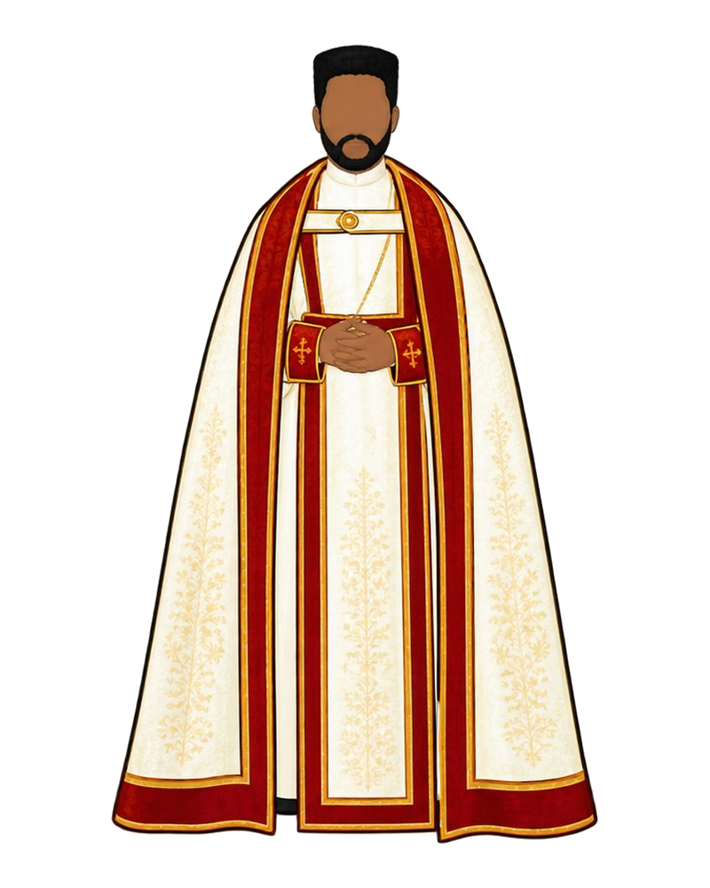

Rev. Fr. — Parish Clergy
Ordained priests serving parishes, congregations, and institutions across every diocese of the Church, organized here by diocese.
This count includes 1,737 priests of no further rank, as well as 47 monks, 117 cor-episcopas, and 30 bishops, who are priests while also holding those other positions. Only the 1,737 are listed below.

A priest in the white and crimson vestments in which he serves the altar.